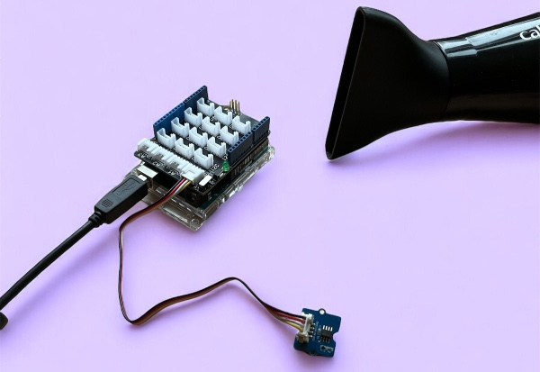
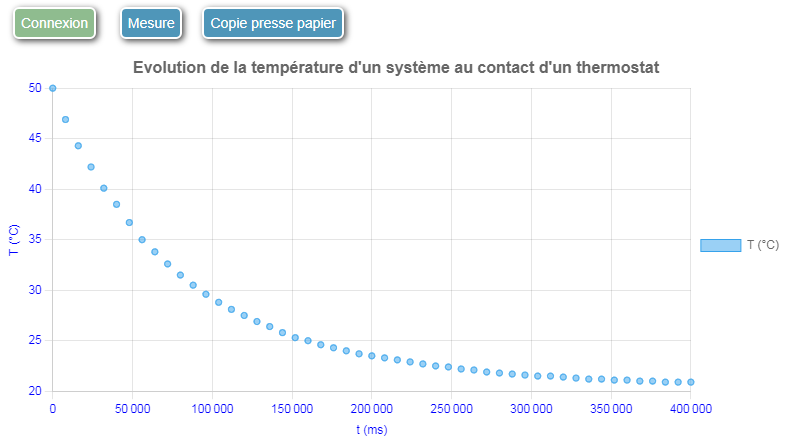
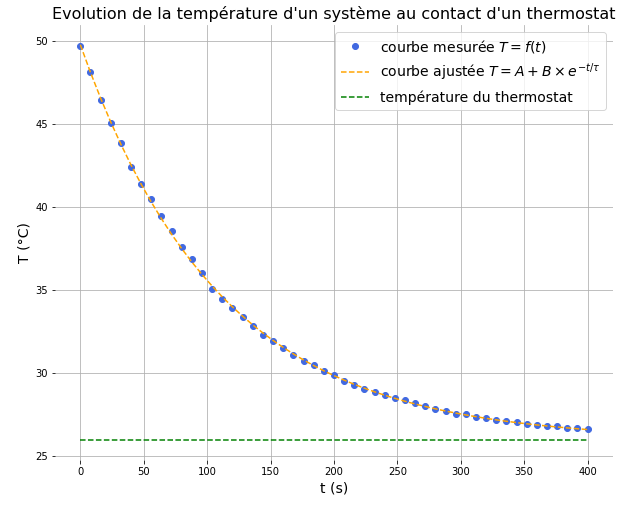

Célérité des ultrasons dans l'air.
temporelMesurer la variation temporelle de la température d'un système incompressible au contact d'un thermostat permet d'illustrer les possibilité des mesures temporelles offertes par la biblothèque Web Sciences.

Le script :
mesure sur la liaison série.Voir à cet effet les commentaires dans le code source du script capteur_temperature.ino.
Le code javascript:
temporel :
mode = "temporel";mesure lorsque l'utilisateur clique sur le bouton mesure:
var commandes = [{texte_bouton:"Mesure", arduino:"mesure"}];temporel,
le temps est la première série par défaut et ne doit pas être ajouté à la variable series):
series = [{grandeur: "T", unite: "°C"}];axes = [{grandeur: "t", unite: "ms"}, {grandeur: "T", unite: "°C"}];Le code Javascript complet est le suivant :
mode = "temporel";
var commandes = [{texte_bouton:"Mesure", arduino:"mesure"}];
series = [{grandeur: "T", unite: "°C"}];
titre_graphe = "Evolution de la température d'un système au contact d'un thermostat";
axes = [{grandeur: "t", unite: "ms"}, {grandeur: "T", unite: "°C"}];
Le code complet à insérer dans une cellule Jupyter
from IPython.display import HTML, display
from web_sciences import get_interface
my_init = '''
mode = "temporel";
var commandes = [{texte_bouton:"Mesure", arduino:"mesure"}];
series = [{grandeur: "T", unite: "°C"}];
titre_graphe = "Evolution de la température d'un système au contact d'un thermostat";
axes = [{grandeur: "t", unite: "ms"}, {grandeur: "T", unite: "°C"}];
'''
S = get_interface(my_init)
display(HTML(S))

Le traitement des données permet de tracer les graphes T = f(t) de les modéliser par une exponentielle décroissante et de déterminer le temps caractéristique ainsi que la température du thermostat (voir le notebook ci-dessous).

Célérité des ultrasons dans l'air.

Circuit RC à tension constante.

Vérification de la loi de Mariotte.
Le module web_sciences a été écrit par un enseignant Français passionné d'informatique qui enseigne la physique en lycée depuis plus de 40 ans et NSI depuis sa création.